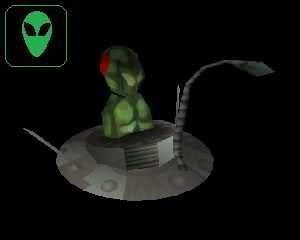
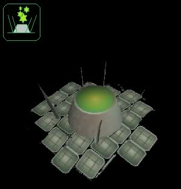

Martian Units |
|---|
| Martian Worker |
|---|
|  | Basic Martian unit for building things, mining and deforestation. |
| Martian Trooper |
|---|
| Core infantry unit armed with death ray. Unarmored, can engage both ground and air targets |
| Chemical Trooper |
|---|
| Advanced infantry armed with a lethal acidic flame thrower. Short ranged and can only engage ground targets |
| Tripod |
|---|
| Standard medium mechanized unit, fast with decent firepower in a twin pulse laser |
| Assault Tripod |
|---|
| Heavy mechanized unit for storming enemy bases. Is not produced in the normal way, instead a worker has to build an Invasion beacon to communicate with the mass of Invasion capsules which are hovering in low orbit awaiting the call. The beacon can then be switched to communicate with the capsules, one of which lands on the beacon. The Assault Tripod emerges. |
| Disc Droid |
|---|
| Light air unit suitible for scouting possible enemy positions and attacking lightly defended targets. Can engage both air and ground units. |
| Flying Saucer |
|---|
| Heavy air unit, the flying saucer is probably the most powerful offensive unit in the Martian's arsenal. Capable of engaging both air and ground units. |
Martian Buildings |
|---|
| Mothership |
|---|
| The central building of any successful invasion, these are the first units to land. Can produce workers |
| Command Saucer |
|---|
| The hub of military activity, this is required to hatch Martian troopers and conduct research |
| Space Port |
|---|
| Industrial replication plant capable of producing Tripods and air units |
| Energy Source |
|---|
|  | power plant required for running of invasion forces |
| Invasion Beacon |
|---|
| Advanced communication device capable of summoning invasion capsules containing Assault Tripods |
| Laser Turret |
|---|
| Defensive building mounting a very powerful and longer ranged death ray. Employs advanced Plasma Shield armor. Built on Turret Base which is built by workers. |